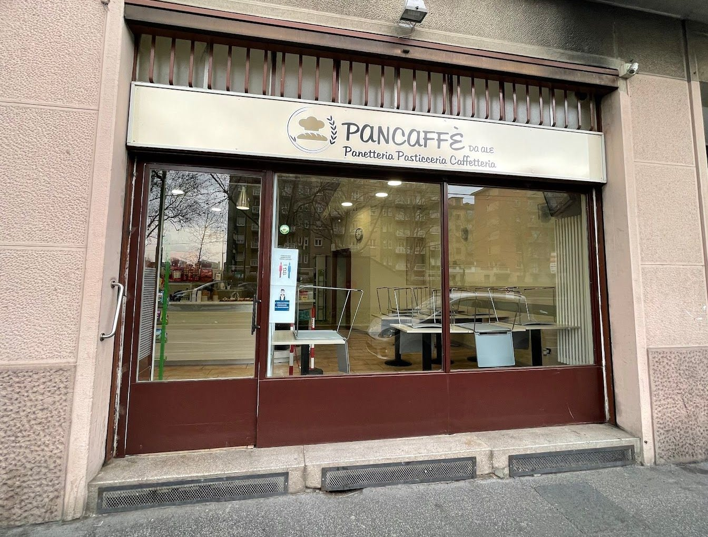

Panetteria · pasticceria · caffetteria · viale Fulvio Testi 86, Milano Bicocca
pane caffè
pan·caf·fè s. m. [da pane e caffè]
- Panificio, pasticceria e caffetteria in una parola sola, con la tavola calda a pranzo.
- In viale Fulvio Testi 86, dalle sei del mattino alle otto di sera, dal lunedì al sabato.
- Attività di proprietà di donne.
Orari in negozio
4,4 su Google con 112 recensioni · «focaccia» e «pizza» sono le parole che i clienti scrivono più spesso

pan·caf·fè · etimologia
Da pane e caffè.
Pane, perché dalle sei del mattino il forno è acceso: pane, focacce, pizze al trancio già in vetrina alle otto e mezza.
Caffè, perché si fa colazione al banco con le brioche e i pasticcini, e nel tardo pomeriggio si torna per l'aperitivo con le focaccine.
Messe insieme fanno una parola che sul vocabolario non c'è, e in viale Fulvio Testi sì.
pan·caf·fè · significati
Sei cose che vuol dire.
Nell'ordine in cui succedono, dalle sei del mattino in poi.
-
1. colazione
Dalle sei del mattino, al banco: caffè, cappuccino, brioche e pasticcini. Il pasticcino alla mousse di cioccolato bianco ha una recensione tutta sua.
-
2. pane e focaccia
Pane ben lievitato e ben cotto, grissini, la focaccia al formaggio e quella con le cipolle. «La migliore focaccia con le cipolle di Milano! Parola di genovese!», ha scritto Guido sette mesi fa.
fig. 3 la focaccia con le cipolle (foto loro) -
3. pizza al trancio
Sfornata dal mattino: alle otto e mezza è già in vetrina. Con prosciutto, brie e rucola; con prosciutto e olive; con le verdure.
fig. 4 prosciutto, brie e rucola fig. 5 prosciutto e olive -
4. pranzo
Tranci, focacce, panini con il prosciutto o con la cotoletta, e la tavola calda: sulla tenda c'è scritto. Da portare via, o ai tavolini, dentro e fuori.
-
5. torte e pasticceria
Crostate alla frutta, torte ai frutti rossi, torte per i compleanni e per le feste con la scritta sopra, l'uovo di Pasqua. Su ordinazione, si parla al banco.
fig. 6 crostata alla frutta fig. 7 torta ai lamponi fig. 8 con la scritta fig. 9 l'uovo di Pasqua -
6. aperitivo
Nel tardo pomeriggio, lo spritz con le focaccine: alle olive, margherita, liscia. Di nostra produzione, come tutto il resto.
pan·caf·fè · esempi d'uso
Come lo usano i clienti.
Cinque recensioni su Google, com'erano scritte. Su Google siamo a 4,4 con 112 recensioni.
Oltre al buon cibo e alla grande gentilezza, la qualità del PANE è fantastica: è ben lievitato e ben cotto, leggero e ben digeribile. Un piacere semplice ma autentico per il palato. A trovarne così!
Simona S. · 7 mesi fa · 5 stelle
Mi sono fermato stamattina verso le 8.30 per prendere qualcosa per pranzo .....ho trovato la pizza appena sfornata. Ho preso due tranci e un pezzo di focaccia al formaggio. Una roba favolosa davvero !!!!!! Complimenti tutto buonissimo
Bob M. · 9 mesi fa · 5 stelle
La migliore focaccia con le cipolle di Milano! Parola di genovese! 😊
Guido R. · 7 mesi fa · 5 stelle
Sono capitata qui per caso, volevo un caffè e sono stata attirata dalla simpatia dell'insegna. Il locale è semplice ed elegante, ampia scelta di panificati e pasticcini. Le collaboratrici gentilissime, ottimo il caffè ed il servizio. Ho preso un pasticcino alla mousse di cioccolato bianco delizioso. Ottimo rapporto qualità prezzo. Tornerò
Roberta D. V. · 4 anni fa · 5 stelle
Una chicca in un punto di Fulvio Testi piuttosto sguarnito (ma vicino al MIC): panificio, caffetteria e tavolini all'aperto, non so gli orari, ma sicuramente vale una visita dalla colazione all'aperitivo.
Maddalena F. P. · 2 anni fa · 5 stelle
pan·caf·fè · sinonimi
Panetteria, pasticceria, caffetteria, tavola calda.
Le tre parole sull'insegna e la quarta sulla tenda. Nessuna da sola dice tutto: per questo la parola è una.
Nota d'uso. Attività di proprietà di donne; al banco, come scrivono i clienti, «le ragazze».
pan·caf·fè · dove si trova
In viale Fulvio Testi 86, dalle sei alle otto.
Dal lunedì al sabato, orario continuato. Domenica chiuso. Per le feste guardate Instagram, o chiamate.
| lunedì | 06:00–20:00 |
| martedì | 06:00–20:00 |
| mercoledì | 06:00–20:00 |
| giovedì | 06:00–20:00 |
| venerdì | 06:00–20:00 |
| sabato | 06:00–20:00 |
| domenica | chiuso |
Pancaffè da Ale
Viale Fulvio Testi 86
20125 Milano (Bicocca)
02 9144 8100 · @pancaffedaale
Le domande che ci fanno.
A che ora aprite?
Alle sei del mattino, dal lunedì al sabato, e chiudiamo alle otto di sera senza pausa. Domenica chiuso.
La pizza c'è già la mattina?
Sì: si sforna dal mattino e alle otto e mezza è in vetrina, al trancio, insieme alle focacce.
Fate le torte su ordinazione?
Sì, per compleanni e feste, anche con la scritta. Si ordinano al banco o per telefono qualche giorno prima.
Si può pranzare?
Sì: tranci di pizza, focacce, panini e la tavola calda, da portare via o ai tavolini, dentro e fuori.
Siete su Too Good To Go?
Sì, a fine giornata, quando resta qualcosa. Se non resta niente la box la togliamo: vale la pena passare prima, al banco.
Avete Instagram?
Sì, @pancaffedaale: le foto del giorno e gli avvisi per le feste.